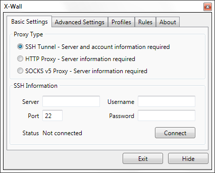

Introduction
What is X-Wall?
X-Wall is a small tool wraps together Privoxy and Plink (which is part of PuTTy) to provide people an easier way to X (cross) the Great Firewall of China.

System Requirements
Microsoft Windows 2000/XP/7/8
Microsoft .NET Framework 3.5 SP1 (pre-installed on Windows 7)
Other Requirements
You will need to prepare the SSH account (or a HTTP proxy) yourself, which is usually not free (but also not expensive, many within 50 RMB per year).
Features
- Easy to setup and configure. What you need to do after setup is just to start X-Wall, enter your SSH account information and connect.
- Built-in X-List (based on GFWList and rules shared by X-Wall users) and will check it online everyday, when you visit websites that are not blocked, it will connect directly.
- Support custom rules. Just copy the link you want to add from your browser, right click the notification icon of X-Wall, and then "Add rules".
- Share your rules and keep the online rules list up to date (anonymous and optional).
- Ability to share the proxy with your phone via WiFi (need to cancel "Listen to local address only").